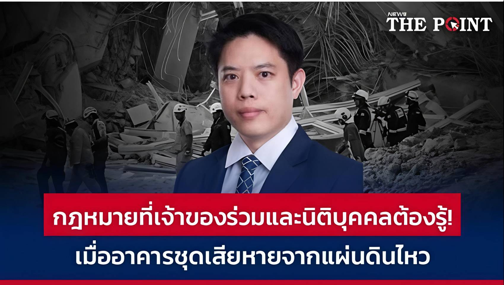
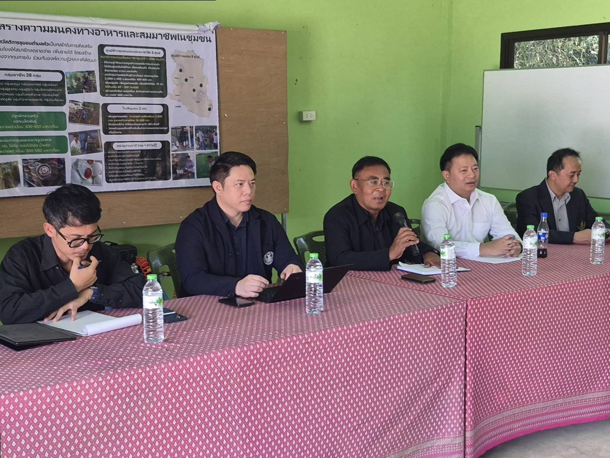

Bangkok Possible — ชุดบทความเพื่อความเข้าใจสภากรุงเทพมหานคร | บทความที่ 2 จาก 5

Traffy Fondue คือแพลตฟอร์มรับเรื่องร้องเรียนของกรุงเทพมหานคร พัฒนาโดย NECTEC ใช้งานผ่าน LINE ปัจจุบันมีเรื่องร้องเรียนสะสมมากกว่า 998,000 เรื่อง คิดเป็น 81% ที่ได้รับการแก้ไขแล้ว
ตัวเลขเหล่านี้ไม่ใช่แค่สถิติ มันคือภาพสะท้อนของเมืองที่ประชาชนพยายามบอกให้ฟังว่า "ตรงนี้มีปัญหานะ" แต่คำถามคือ ส.ก. ได้ฟังเสียงเหล่านี้หรือเปล่า?
ตัวเลขเหล่านี้ไม่ได้มาจากการสำรวจความคิดเห็น แต่มาจากปัญหาที่ประชาชนแจ้งเข้ามาจริงๆ ทุกวัน ซึ่งหมายความว่า ส.ก. ที่ทำหน้าที่ได้ดี ควรนำข้อมูลเหล่านี้ไปใช้ในสภาครับ

จากการศึกษาผลงาน ส.ก. ชุดปี 2565-2567 พบว่ายังมีช่องว่างอยู่พอสมควร มีกระทู้ถาม 53 ครั้งใน 2 ปี จากสมาชิก 50 คน และข้อบัญญัติที่ ส.ก. ริเริ่มเองสำเร็จ 0 ฉบับ
ไม่ได้หมายความว่า ส.ก. ไม่ทำงานนะครับ แต่ตัวเลขนี้ชี้ให้เห็นว่ายังมีพื้นที่ให้พัฒนาได้อีกมาก โดยเฉพาะในเรื่องการนำข้อมูลเชิงปริมาณมาใช้สนับสนุนการทำงานอย่างเป็นระบบ
ผมเสนอแนวคิด "นวัตกรรมนิติบัญญัติชิงรุก" (Proactive Legislative Innovation) ซึ่งหมายถึงการใช้ข้อมูลจาก Traffy Fondue เป็น evidence base สำหรับงานสภา:
"Traffy Fondue ไม่ใช่แค่กล่องรับเรื่องร้องเรียน มันคือ real-time dashboard ของปัญหาเมือง ส.ก. ที่ไม่อ่านข้อมูลนี้ เหมือนหมอที่ไม่ดูผลแล็บ" — ดร. ธันย์ธรณ์เทพ แย้มอุทัย
ชุดบทความ Bangkok Possible: 1. ส.ก. คือใคร? | 2. Traffy Fondue กับ ส.ก. | 3. นวัตกรรมนิติบัญญัติชิงรุก | 4. ทำไมต้องเลือก ส.ก. ให้ถูก | 5. สภา กทม. ประชุมก่อน สส.?